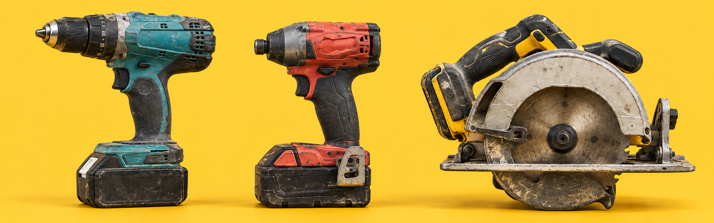
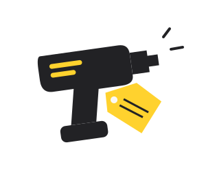
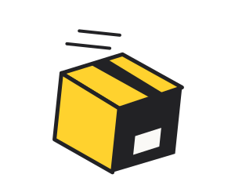

Budet bygger på ditt verktyg
Exakt modell, funktion, slitage och tillbehör ger underlaget. Ett repigt verktyg är inte automatiskt ett trasigt verktyg.
Begagnade proffsverktyg. Nya möjligheter.
Slipp annonser, budgivning och att hitta en köpare.
Vi köper proffsverktyg från privatpersoner och företag.

Från verktygslådan till nästa jobb
Du berättar vad du har. Vi hjälper verktyget vidare.

1Välj modell, funktion och skick. Ange vad som följer med och se budet innan du bestämmer dig.

2När du väljer att gå vidare får du instruktioner för packning och frakt som passar försändelsen.
Vi kontrollerar verktyget. Stämmer det med dina uppgifter går affären vidare till utbetalning.
Bra verktyg har mer att ge
En extra skruvdragare. Sågen som blivit stående. Maskinen som inte längre passar jobbet.
De kan göra nytta hos någon annan. ToolDrop är till för dig som vill sälja vidare utan att göra försäljningen till ett eget projekt.
Vad har du i verktygslådan? →En affär du förstår
Du ska veta vad du tackar ja till.
Och vad som händer om något inte stämmer.
Exakt modell, funktion, slitage och tillbehör ger underlaget. Ett repigt verktyg är inte automatiskt ett trasigt verktyg.
Du ser erbjudandet innan du går vidare. Att prova prisflödet betyder inte att du har sålt något.
Om kontrollen visar att verktyget avviker från beskrivningen får du ta ställning till ett nytt bud.
Byggda för att användas
Vi fokuserar på verktyg från etablerade proffsmärken.
Exakt modell och skick avgör om vi kan lämna ett bud.
Företag & större partier
Byter ni utrustning eller avvecklar en verksamhet? Samla partiet på en gång. Ni ska inte behöva börja om för varje maskin.
Flera verktyg.
Ett underlag.
För konkursbon behöver försäljningen hanteras med behörig företrädare.
Bra att veta innan du börjar
Här är svaren på några vanliga frågor.
Vi fokuserar på begagnade proffsverktyg. Märke, exakt modell, funktion och skick avgör om vi kan köpa. Prototypen innehåller tre exempelmodeller att testa med.
Nej. Slitage och funktion är olika saker. Ange hur verktyget fungerar och välj sedan den bild som bäst motsvarar nötningen på ytan. Trasiga eller otestade verktyg får i testflödet inget automatiskt bud.
Priset förutsätter att verktyget stämmer med din beskrivning. Om vår kontroll visar en avvikelse får du ta ställning till ett nytt bud innan affären går vidare. Alla belopp i den här prototypen är exempel, inte riktiga bud.
Vänta på instruktioner för just din försändelse. Batterityp, skick och vad som ska skickas påverkar packning och frakt. Prototypen skapar ingen fraktsedel.
Utbetalning är tänkt att ske efter godkänd kontroll. Planen är Swish till privatpersoner och banköverföring till företag. Tider och villkor behöver fastställas före lansering. Inga betalningar görs i prototypen.
Ja, använd ingången för företag och större partier. Beskriv omfattningen som ett samlat underlag. I prototypen kan du testa ett kort formulär utan att skicka något.
Låt verktygen jobba vidare
Du väljer om du vill gå vidare.